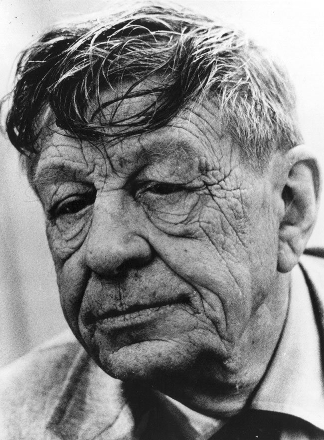

Tuesday, August the 14th, 2012
back to: title, date or indexes
Having listed some of the “heady confect” of words revived in his poetry by Wallace Stevens, Roger Kimball turns to W H Auden and finds
Auden often remarked on his fondness for the Oxford English Dictionary. In later life, it provided some of his favourite reading matter and indeed was the source of many of the lexical curiosities that—increasingly—bedizened his poetry . . . In a review of Epistle To A Godson (1972), one critic lists “blouts, pirries, stolchy, glunch, sloomy, snudge, snoachy, scaddle, cagmag, hoasting, drumbles”, among others. How many do you know?
From The Permanent Auden by Roger Kimball, collected in Experiments Against Reality (2000).
